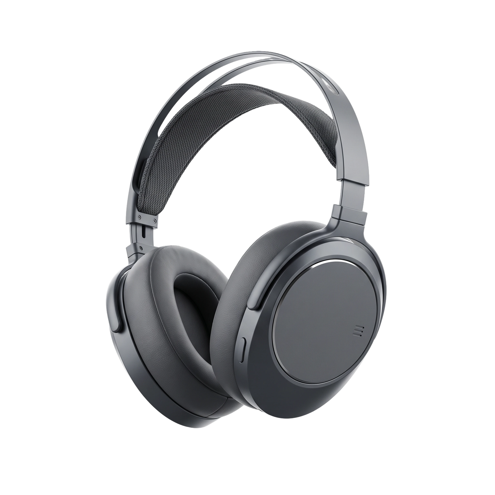
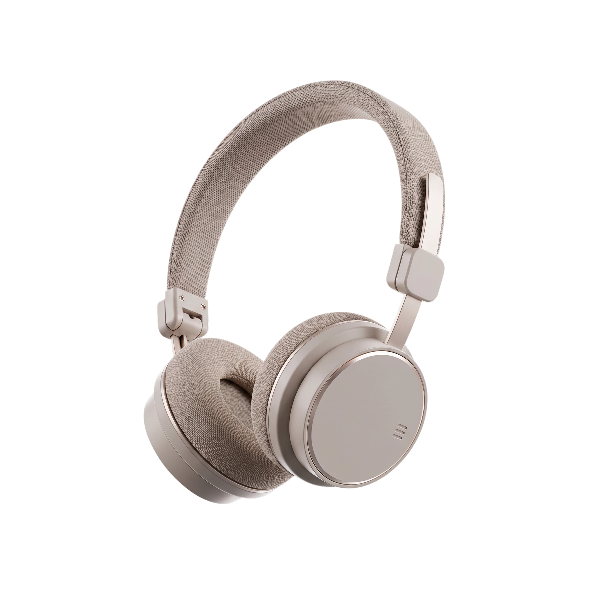
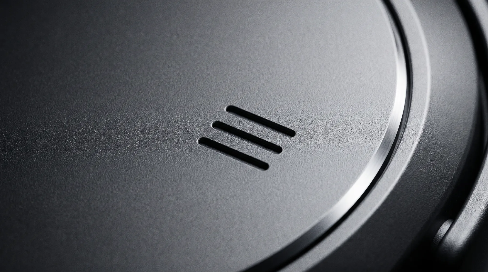

08:40
The commute
Half your attention on the street, half on the call.
Sound, tunedto the air you’re in.
An open office becomes a closed door.
Calls all day. Music all evening.
Light enough to forget. Steady enough to run.
Your headphones stay exactly the same.
Half your attention on the street, half on the call.
Constant conversation, nowhere to disappear to.
Wind, sweat, and a fit that has to survive both.
Each one is tuned for a different state. The one you're in right now decides which is yours.


Hybrid ANC that turns an open office into a closed door. Built for the work that needs your full attention.
No quiz. Drag the light to where your day actually sits. The mode that fits will come into focus.
Flow. Mostly still, staying aware. Built for the everyday mix of calls, focus, and life around you.
Meet Aether Flow| Spec | Aether One | Aether Flow | Aether Move |
|---|---|---|---|
| Form | Over-ear | On-ear, foldable | True wireless |
| Noise | −38 dB | −32 dB | Aware |
| Battery | 40 h | 30 h | 8 + 32 h |
| Weight | 258 g | 220 g | 5 g per bud |
| Finish | Basalt | Travertine | Bone |
| Built for | Deep work, flights | Calls, all-day wear | Runs, the city |
| Price | €449 | €249 | €179 |

Every pair carries all three. Choose the one we cut a little deeper.
€449 · Two-year warranty · 14-day home trial